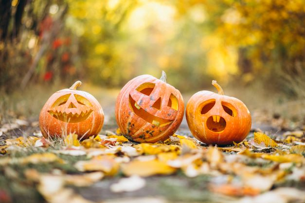
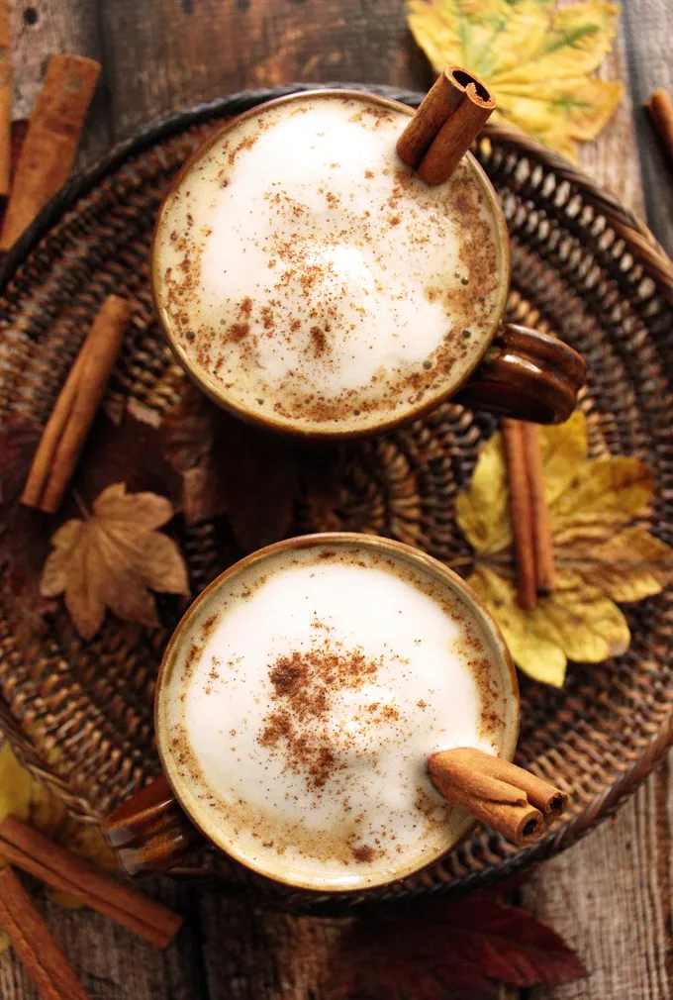
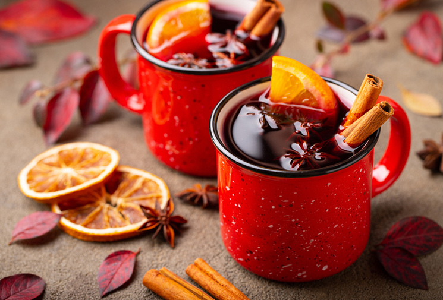
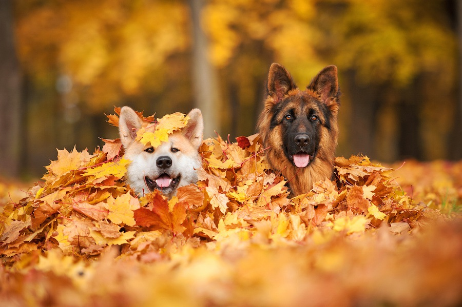

Сьогодні ми розберемося, чому осінь-краща пора року для багатьох людей.
Розглянемо декілька найочевиднішіх причин:
Хелловін
Хеллові́н, або Гелловін (англ. Halloween, англ. вимова: [ˌhæl.əʊˈiːn]; скорочено від «All Hallows' Eve») — святкується в ніч проти 1 листопада. У ХІХ ст. поширилась думка про язичницькі корені цього свята, зокрема про походження його від кельтського Саваня, однак останні дослідження доводять його католицькі корені.
Найгучніше відзначається у США, Канаді, Ірландії та Великій Британії. Хоч в цих країнах Хелловін не є державним святом, та за популярністю поступається лише Різдву. В Україні набуває поширення після здобуття незалежності, разом з пожвавленням у світі процесів американізації наприкінці XX ст.
Під час святкування Хелловіну відбувається традиційне випрошування цукерок дітьми, відвідування тематичних костюмованих вечірок[en], прикрашання оселі та будівель, вирізання ліхтаря з гарбуза, цукрування яблук, розведення вогнищ, виловлювання яблук з відра, розігрування, розповідання моторошних оповідок, перегляд фільмів жахів тощо. Символом свята є ліхтар з гарбуза у вигляді людської голови (Ліхтар Джека).

Осінні напої
У чому проблема? Температура "за бортом" постійно знижується, а в душі вже засіла осіння хандра? Якщо на
додачу до цього комунальники ще й не поспішають вмикати опалення, а теплі кофти і шкарпетки вже не
радують,
значить прийшов час зігріватися зсередини.
Зігріваючі зілля — це не лише вигадки з "Гаррі Поттера", їх можна приготувати на кожній кухні! А надто —
у
геловінський вікенд. Осінні напої допоможуть не тільки швидко зігрітися, але й піднімуть настрій,
підвищать
працездатність та імунітет, а ще наповнять оселю затишними ароматами.


Топ найкращих напоїв для осені:
- Гарячий Латте з додаванням кориці
- Пунш
- Глінтвейн
- Латте
- Імбирний чай
- Гроґ
Початок нового навчального року
Для дітей і дорослих осінь-це новий етап у навчанні. Так як, на психологічному рівні в нас закарбувалася пам'ять про освітні процеси, саме восени нам легше налаштуватися на навчальний процес.
Сприятлива погода для прогулянок
Ні для кого не секрет,що прогулянки з домашніми улюбленцями повинні проходити так,щоб собакам було комфортно. Сильна спека чи холод погано впливають на самопочуття улюбленця. Саме восени собаки почувають себе добре на вулиці. Це спріяє тому, що прогулянку можна зробити довшою без шкоди для пухнастих. Це пріносить користь для здорового сну та гарного апетиту.

Осінні фільми
З настанням осені виникає нестримне бажання засісти вдома з чашкою гарячого чаю та поринути у світ кінематографу. Особливо, коли за вікном похмура і дощова погода, а хочеться тієї осені, яку ми уявляємо у своїх мріях, з її десятками вогняних відтінків і горами опалого листя. Де ж ще відшукати таку осінь, як не в найпопулярніших фільмах, де ця пора року розкрита у всій своїй красі?Тож пропонуємо 10 фільмів, у яких знята ідеальна осінь.
- Мачуха / Stepmom (1998, США)
- Останній вересень / The Last September (1999, Ірландія, Британія, Франція)
- Жовтневе небо / October Sky (1999, США)
- Солодкий листопад / Sweet November (2001, США)
- Одного разу / Once (2007, Ірландія)
- Коли Гаррі зустрів Саллі / When Harry Met Sally (1989, США)
- Розумник Вілл Гантінґ / Good Will Hunting (1997, США)
- Пізня осінь / Late Autumn (2010, США, Південна Корея)
- Легенди осені Legends of the Fall (1995, США)
- Осінь в Нью-Йорку / Autumn in New York (2000, США)